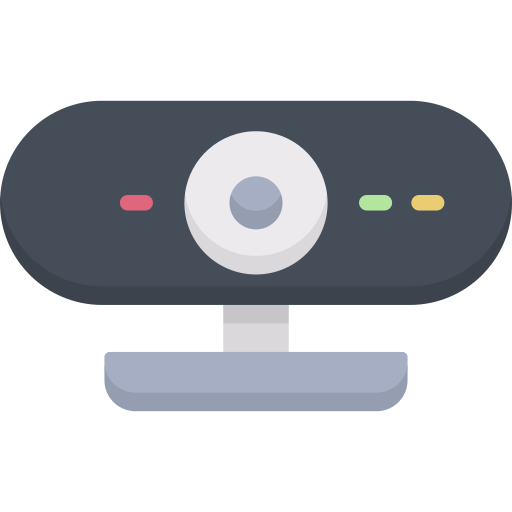
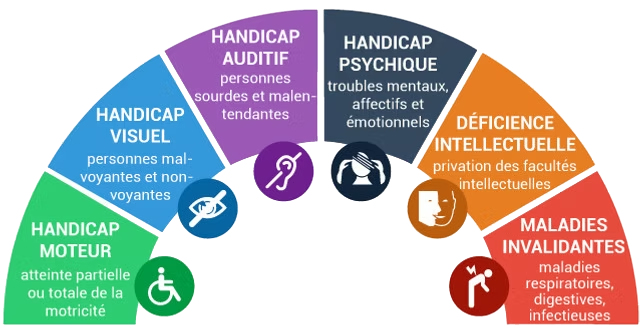

Formation accessibilité numérique - développeurs
by Atecna
Dernière mise à jour : Fév. 2025
 Pensez à allumer votre webcam
Tour de table
- Qui êtes-vous ?
- Quel est votre niveau de connaissance de l’accessibilité numérique ?
Qui suis-je
- Développeur Full Stack
- Auditeur accessibilité
- (ancien) Scrum Master
Si vous avez des questions après la formation: bparent@atecna.fr
Sommaire - Journée 1
- Quelques définitions
- Les outils
- 1. Images
- 2. Cadres
- 3. Couleurs
- 8. Eléments obligatoires
- 10. Présentation de l'information
- 5. Tableau
- 9. Structuration de l'information
- 4. Multimédia
Sommaire - Journée 2
- 6. Liens
- 7. Scripts
- 12. Navigation
- 13. Consultation
- 11. Formulaire
- Comment interpréter un audit ?
- Question ?
Quelques définitions
Définissons le handicap
Limitation d’activité ou restriction de la participation à la vie en société subie par une personne en raison d’une altération d’une fonction ou d’un trouble de santé invalidant.
Nous sommes TOUS concernés.
Nuance
Cette définition est à nuancer
C’est le manque d’adaptation qui crée la limitation, pas le handicap.
Avant d’être une obligation légale, l’accessibilité est avant tout un devoir moral.
Quelques exemples d'adaptation ratés pour l'accessibilité
Le handicap en France
Dans une salle de 300 personnes
- 1 aveugle
- 6 personnes malvoyantes
- 23 personnes sourdes / malentendantes
- 15 daltoniens
- 30 dyslexiques
- 17 troubles de la motricité
- 23 handicaps mentaux
Types de handicap
Technologies d'assistance
Que pouvez-vous me citer comme technologie d’assistance ?
(pour l'accessibilité numérique)